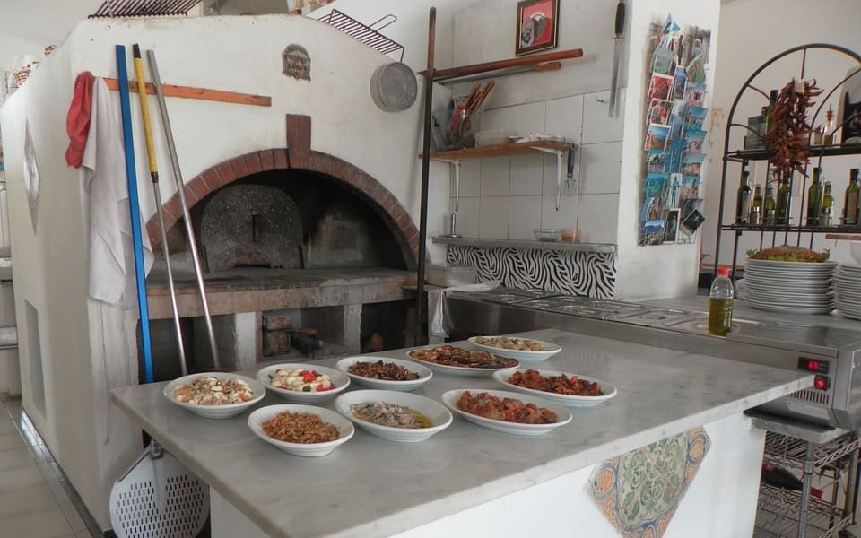

Quienes somos
Nuestro trabajo se puede saborear
Lo de Antonio es un lugar democrático donde todos son bienvenidos. Nuestra cocina es lúcida, ligera y dinámica. Nuestra misión es crear comidas que involucren todos nuestros sentidos.
Ubicado en zona rural
El restaurante se encuentra ubicado a 5 minutos de la ciudad. La ubicación enfatiza la visión de claridad y diversidad gastronómica. Exploramos la zona de tensión entre lo urbano y lo natural.

La inspiración de nuestra cocina
Lo de Antonio tiene producción propia: pasta, pan, salsas, postres, embutidos, todo es elaborado en casa sin conservantes ni aditivos químicos. Lo que no es posible producir internamente se compra a pequeños productores, en su mayoría ubicados en el interior de nuestro país.